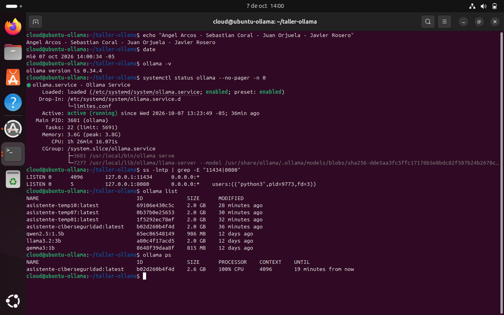
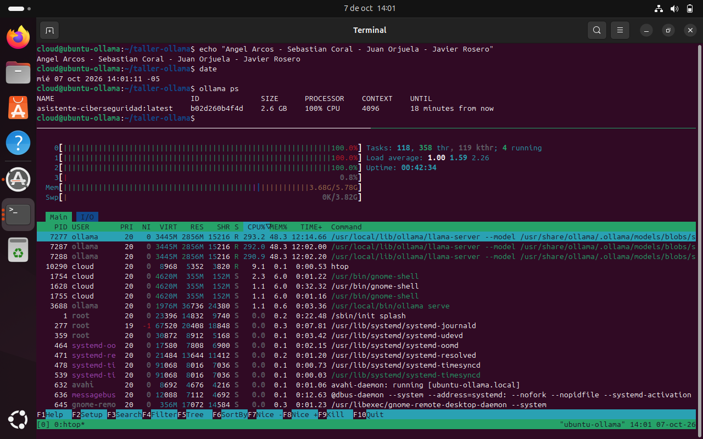
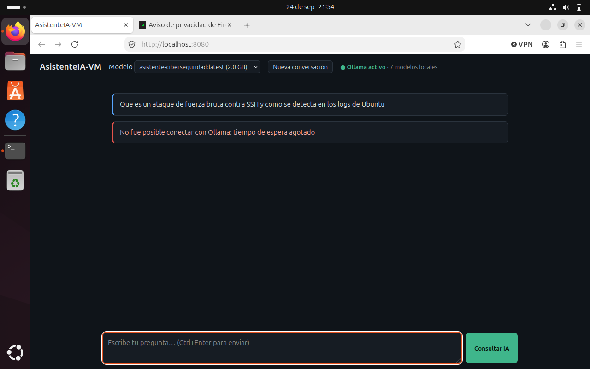
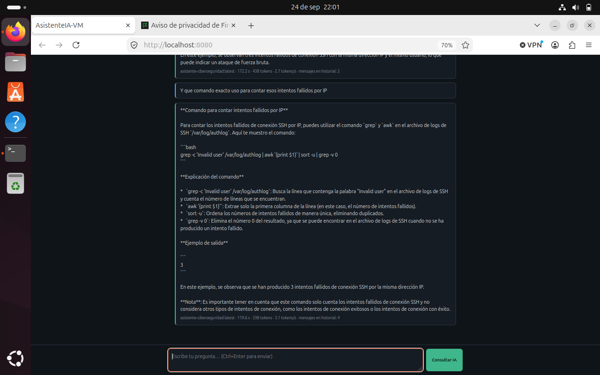

Implementación de una IA local en una máquina virtual Ubuntu
Proyecto final: AsistenteIA-VM
| Integrantes | Angel Arcos Sebastian Coral Juan Orjuela Javier Rosero |
| Docente | Mg. Iván Darío Méndez Aguilera |
| Fecha | 7 de octubre de 2026 |
| Entorno | VirtualBox 7.2.16 · Ubuntu 24.04.5 LTS · Ollama 0.34.4 |
Todas las salidas citadas están completas en la carpeta evidencias/; cada archivo lleva el nombre del ejercicio (p. ej. e03_procesos.txt) y fue generado por el script del mismo nombre en codigo/scripts/. Cada salida empieza con echo "Angel Arcos - Sebastian Coral - Juan Orjuela - Javier Rosero" seguido de date y hostname, ejecutados en la terminal de la VM. Las evidencias se volvieron a generar el 7 de octubre con ese encabezado. Las que no se podían repetir sin reinstalar o volver a descargar modelos (instalación 03_*, 00_linea_base, e07_*, s04_diagnostico, s04_override, p_validacion_app y las corridas del benchmark del 24 de septiembre) se dejaron como estaban, con el rótulo de los integrantes. Las capturas de pantalla de la VM están en capturas/.
1. Hardware y máquina virtual
| Anfitrión | VM Ubuntu-Ollama | |
|---|---|---|
| Sistema | Windows 11 Home | Ubuntu 24.04.5 LTS, kernel 7.0.0-34-generic |
| CPU | Intel Core i9-12900H, 14 núcleos / 20 hilos | 4 vCPU (20 % de los hilos) |
| RAM | 16 GB | 6 GB (se empezó con 8 GB, ver 1.2) + 3,8 GB de swap |
| Disco | SSD, ~450 GB libres | VDI dinámico de 40 GB (ampliado desde 25 GB) |
| GPU | NVIDIA RTX 3070 Ti Laptop | ninguna: VirtualBox no hace passthrough → Ollama en modo CPU |
| Red | — | NAT; reenvío 127.0.0.1:2222 → 22 solo para administrar por SSH |
La VM se obtuvo clonando una Ubuntu existente del curso (VBoxManage clonevm) para no tocar la original. El disco se amplió con VBoxManage modifymedium --resize 40960 y dentro de Ubuntu con growpart /dev/sda 2 + resize2fs /dev/sda2. Antes de instalar Ollama se tomó el snapshot antes-de-ollama, y al final taller-completo. lscpu reporta Fabricante del hipervisor: KVM y Tipo de virtualización: lleno, porque VirtualBox expone la interfaz paravirtualizada tipo KVM. (s02_preparacion_vm.txt, e01_identificacion.txt)
1.1 Ejercicio 1: identificación del sistema
| Versión | Kernel | Arquitectura | vCPU | RAM | Disco raíz |
|---|---|---|---|---|---|
| Ubuntu 24.04.5 LTS (noble) | 7.0.0-34-generic | x86_64 | 4 | 5,8 GiB | /dev/sda2 40 G, 49 % usado |
El kernel pasó de 7.0.0-31 a 7.0.0-34: el apt upgrade del paso 1 instaló un kernel nuevo, que solo quedó activo tras reiniciar la VM.
1.2 Actividad: recursos asignados vs. anfitrión (lo que pasó al asignar demasiado)
Con 8 GB (la mitad de la RAM física) y el anfitrión usando además navegador y editores, la VM se congeló durante la primera inferencia: el reloj del escritorio se detuvo, SSH respondía Connection timed out during banner exchange y el botón ACPI se ignoraba. En ese momento Windows tenía 0,86 GB libres y el proceso VirtualBoxVM solo 4,4 GB en RAM física de los 8 GB asignados. El log de VirtualBox decía Guest seems to be unresponsive.
La RAM de una VM no se reserva: es memoria virtual del proceso VirtualBoxVM. Si el anfitrión no la tiene, Windows pagina a disco parte de la "RAM" del invitado. Ubuntu cree tener 8 GB, pero cada acceso a esas páginas es un fallo de página en el anfitrión y el invitado entra en thrashing, justo cuando Ollama recorre todos los pesos del modelo para generar cada token. Con demasiadas vCPU pasa algo análogo: el anfitrión no puede planificarlas todas a la vez y el invitado acumula latencia (steal time). Se bajó la VM a 6 GB. (s02_vm_vs_anfitrion.txt)
2. Instalación y verificación (sección 03)
sudo apt update && sudo apt upgrade -y: se actualizaron todos los paquetes, incluido el kernel.sudo apt install -y curl wget git pciutils lshw htop net-toolscurl -fsSL https://ollama.com/install.sh | sh: el instalador crea el usuario de sistemaollama, lo agrega a los gruposrenderyvideo, instala la unidadollama.servicey termina con WARNING: No NVIDIA/AMD GPU detected. Ollama will run in CPU-only mode.ollama -v→ 0.34.4;which ollama→/usr/local/bin/ollama- a 7.
systemctl status ollama→ active (running), enabled;curl http://127.0.0.1:11434/api/tags→{"models":[]}

limites.conf, cgroup con ollama serve y el proceso hijo llama-server, puertos en escucha (11434 de Ollama y 8080 de la interfaz, ambos solo en 127.0.0.1) y modelos locales.3. Administración de Ollama y un problema real de SO (sección 04)
Se revisaron servicio, puerto, logs y recursos (systemctl, journalctl -u ollama, ss -lntp, free -h). nvidia-smi no existe en la VM, lo cual es coherente con la ausencia de GPU. (s04_administracion.txt)
3.1 Diagnóstico: la VM se congelaba en cada inferencia
Incluso con 6 GB, cualquier modelo (también gemma3:1b, de 815 MB) volvía a congelar la VM. El log de VirtualBox mostró la causa de fondo:
HM: HMR3Init: Attempting fall back to NEM: VT-x is not available NEM: info: Found optional import WinHvPlatform.dll!...
Windows 11 tiene activo su hipervisor (Hyper-V / seguridad basada en virtualización), que toma VT-x. VirtualBox queda como cliente de la API de Hyper-V (modo NEM), que es más lento y tiene problemas conocidos cuando todas las vCPU ejecutan código AVX2 intensivo, justo lo que hace ggml al multiplicar matrices. Para aislar la variable probamos la misma consulta variando los hilos de inferencia:
| num_thread | Resultado | Generación |
|---|---|---|
| 1 | responde | 5,9 tok/s |
| 2 | responde | 7,2 tok/s |
| 3 | responde | 10,7 tok/s |
| 4 (por defecto) | la VM se congela (3 de 3 veces) | — |
Solución con systemd y cgroups v2, en un drop-in que no modifica la unidad original:
# /etc/systemd/system/ollama.service.d/limites.conf [Service] Environment="OLLAMA_MAX_LOADED_MODELS=1" # un solo modelo en RAM Environment="OLLAMA_NUM_PARALLEL=1" # una petición a la vez AllowedCPUs=0-2 # cpuset: la vCPU 3 queda para kernel, sshd y GNOME $ systemctl show ollama -p AllowedCPUs → AllowedCPUs=0-2 $ taskset -cp <PID ollama serve> → lista de afinidad actual: 0-2
Además se fijó PARAMETER num_thread 3 en el Modelfile. Solo con AllowedCPUs, Ollama seguía lanzando 4 hilos (cuenta los núcleos de /proc/cpuinfo) sobre 3 CPU. Los hilos de ggml esperan en barreras con espera activa, así que esa sobresuscripción hundía el rendimiento: el procesamiento del prompt bajó a 5,6 tokens/s con el proceso al 283 % de CPU. Con 3 hilos en 3 CPU la VM ya no se congeló en el resto del taller. (s04_diagnostico_congelamiento.txt, s04_override_systemd.txt)
Solución de fondo, no aplicada porque afecta a todo el equipo: desactivar el hipervisor de Windows (bcdedit /set hypervisorlaunchtype off y "Integridad de memoria") para que VirtualBox use VT-x directo. Deja de funcionar WSL2 mientras esté desactivado.
4. Ejercicios prácticos (sección 07)
Ejercicio 2: gestión de paquetes
apt update solo descarga el índice de paquetes (qué versiones existen en los repositorios); no cambia nada instalado. apt upgrade instala las versiones nuevas de los paquetes ya instalados según ese índice. Por eso siempre va primero update. apt policy htop curl git confirmó los tres paquetes instalados, con la versión instalada igual a la candidata. (e02_paquetes.txt)
Ejercicio 3: procesos antes, durante y después de la IA
| Momento | RAM usada | RAM disponible | Proceso principal | CPU |
|---|---|---|---|---|
| Antes (reposo) | 1,0 GiB | 4,7 GiB | gnome-shell | 96 % inactiva |
| Durante la inferencia | 3,5 GiB | 2,3 GiB | llama-server (usuario ollama), RSS 2,5 GB, 41,8 % MEM | 188 % en ps, 37 % inactiva |
| Después (modelo aún cargado) | 3,5 GiB | 2,3 GiB | llama-server sigue en RAM | baja |
Tras ollama stop | 1,1 GiB | 4,7 GiB | ollama ps vacío: se vuelve al nivel de reposo | |
El proceso que consume los recursos no es ollama serve (unos 36 MB) sino su hijo llama-server, que carga el archivo del modelo. Tras responder, el modelo queda en RAM 5 minutos (keep_alive) para que la siguiente consulta no pague la carga. Que la CPU nunca llegue al 100 % global se debe al cpuset: una de las cuatro vCPU queda libre. (e03_procesos.txt)

ollama ps; abajo, htop durante una inferencia: CPU 0, 1 y 2 al 100 % y CPU 3 al 0,8 %, efecto directo de AllowedCPUs=0-2. Los hilos de llama-server ocupan 2,8 GB (48,3 % de la RAM).Ejercicio 4: administración del servicio
$ sudo systemctl stop ollama $ systemctl is-active ollama → inactive $ curl http://127.0.0.1:11434/api/tags curl: (7) Failed to connect to 127.0.0.1 port 11434 after 0 ms: Couldn't connect to server $ sudo systemctl start ollama $ systemctl is-active ollama → active (la API vuelve a responder)
systemd es el proceso 1 del sistema: arranca los servicios en el boot (enabled), los supervisa (Restart=always, RestartUSec=3s), agrupa todos sus procesos en un cgroup (/system.slice/ollama.service) y centraliza sus logs en el journal. (e04_servicio.txt)
Ejercicio 5: procesos, señales y servicios
pgrep -a ollama → 3681 /usr/local/bin/ollama serve. Con ps -fp: dueño ollama, PPID 1 (su padre es systemd), estado Ssl (durmiendo, líder de sesión, multihilo) y 10 hilos.
- SIGTERM (15) le pide al proceso que termine: puede capturarla, cerrar conexiones y liberar recursos. Es la señal que usa systemd (
KillSignal=15). - SIGKILL (9) la aplica el kernel sin avisar al proceso, que no puede capturarla ni limpiar. Puede dejar archivos a medio escribir; de hecho vimos manifiestos corruptos tras apagar la VM a la fuerza.
- Hay que controlar el servicio con
systemctlporque systemd lo supervisa: conRestart=always, unkillmanual solo provoca que lo reinicie a los 3 s. AdemásKillMode=control-groupdetiene también a los hijos (llama-server), cosa que unkillal PID principal no hace. (e05_senales.txt)
Ejercicio 6: red y puerto
$ sudo ss -lntp | grep 11434
LISTEN 0 4096 127.0.0.1:11434 0.0.0.0:* users:(("ollama",pid=3681,fd=3))
$ curl -m 3 http://10.0.2.15:11434/api/tags # IP de la interfaz enp0s3
curl: (7) Failed to connect to 10.0.2.15 port 11434 after 0 ms: Couldn't connect to server
Ollama escucha solo en 127.0.0.1 (loopback): únicamente los procesos de la misma VM pueden conectarse, y ni siquiera la IP propia de la VM responde. Si escuchara en 0.0.0.0 (OLLAMA_HOST=0.0.0.0), cualquier equipo que alcance esa interfaz podría usar el modelo sin autenticación: la API no tiene usuarios ni tokens. Por eso no se abrió ese puerto en el NAT. (e06_red.txt)
Ejercicio 7: almacenamiento de modelos
| Modelo | Tamaño | Disco antes → después | Descarga |
|---|---|---|---|
| gemma3:1b | 815 MB | 15 G (39 %) → 16 G (41 %) | 169 s |
| llama3.2:3b | 2,0 GB | 16 G (41 %) → 18 G (46 %) | 432 s |
| qwen2.5:1.5b | 986 MB | 17 G (46 %) → 18 G (48 %) | 63 s |
Los modelos viven en /usr/share/ollama/.ollama/models (home del usuario de sistema ollama; el usuario normal recibe Permiso denegado), separados en blobs/ (archivos por hash sha256) y manifests/. En total ocupan 3,6 GB. asistente-ciberseguridad aparece con 2,0 GB en ollama list pero no ocupa espacio extra, porque reutiliza el mismo blob de pesos de llama3.2:3b. Se intentó también qwen2.5:7b (4,7 GB): la descarga quedó interrumpida por los congelamientos y dejó ~2 GB en archivos *-partial, que se borraron (el disco pasó de 19 G a 17 G). No se reintentó porque con 6 GB de RAM un modelo de 7B (~5,5 GB cargado) no es viable en esta VM. (e07_almacenamiento.txt, e07_continuacion.txt)
Ejercicio 8: rendimiento y selección del modelo
Misma consulta a los tres modelos por la API (temperature 0.2, seed 42, num_thread 3), descargando cada modelo de la RAM antes del siguiente: "Explica en máximo 120 palabras qué es un proceso en un sistema operativo y en qué se diferencia de un hilo. Da un ejemplo."
| Modelo | Disco | RAM (RSS runner) | Carga | Tiempo total | Tokens | Velocidad | Calidad percibida |
|---|---|---|---|---|---|---|---|
| gemma3:1b | 815 MB | 900 MB | 6,6 s | 39,0 s | 192 | 6,4 tok/s | La mejor de las tres en esta pregunta: define ambos conceptos, marca la diferencia y da un ejemplo (navegador). |
| qwen2.5:1.5b | 986 MB | 1 131 MB | 4,0 s | 32,0 s | 168 | 7,1 tok/s | Correcta pero plana; el ejemplo es débil. |
| llama3.2:3b | 2,0 GB | 2 470 MB | 18,8 s | 62,3 s | 146 | 3,9 tok/s | Tiene un error conceptual ("un proceso se ejecuta en el núcleo"); buen ejemplo (editor con hilos). |
Variabilidad: como se fijó seed 42, las respuestas salieron idénticas palabra por palabra en todas las corridas, pero la velocidad no. El 24 de septiembre la misma prueba dio 7,8 / 5,8 / 3,2 tok/s en una primera corrida y 22,6 / 24,4 / 11,6 tok/s en la segunda, minutos después. La corrida de la tabla (7 de octubre) quedó en el rango lento. En modo NEM el rendimiento depende mucho de lo que esté haciendo el anfitrión, así que se guardaron las tres corridas. Lo que sí se mantiene en todas es el orden: los modelos de 1–1,5B son entre 1,6 y 2 veces más rápidos que el de 3B. (e08_rendimiento.txt, e08_rendimiento_24sep_corrida1.txt, e08_rendimiento_24sep_corrida2.txt, e08_resultados*.json)
Decisión: los tres funcionan en esta VM. Los de 1–1,5B son los más eficientes (casi el doble de rápidos y ~1 GB de RAM). Para el asistente se eligió llama3.2:3b porque, en las pruebas con el prompt de sistema de 4 pasos (sección 5), siguió la estructura de forma consistente en español, y 2,5 GB de RAM caben con margen en 6 GB. La contraparte: es casi la mitad de rápido, y en esta pregunta concreta gemma3:1b respondió mejor. Una sola pregunta no alcanza para decidir calidad; el siguiente paso sería repetir el Modelfile con FROM gemma3:1b y comparar con varias preguntas.
Ejercicio 9: automatización con Bash
El script de la guía tiene un detalle con Ubuntu en español: lscpu | grep "Model name" no imprime nada, porque lscpu traduce la etiqueta a "Nombre del modelo". Se corrigió con LC_ALL=C lscpu | grep "Model name", que fuerza el idioma solo para ese comando. Se asignó permiso con chmod +x y la salida se guardó con ./reporte_sistema.sh | tee reporte.txt. (e09_bash.txt, codigo/reporte_sistema.sh, codigo/reporte.txt)
Ejercicio 10: la IA como apoyo, no como administrador
Se enviaron al modelo free -h, df -h /, las primeras líneas de systemctl status ollama y ps aux --sort=-%mem | head -6 (sin datos sensibles) y luego se contrastó cada afirmación con los comandos:
| Afirmación de la IA | Verificación en Ubuntu | Resultado |
|---|---|---|
| "Hay 2,3 GiB disponibles; la memoria compartida y el caché también contribuyen a la disponible" | El 2,3 GiB está bien leído. Lo del caché es cierto a medias: disponible ya incluye la caché que el kernel puede liberar, no hay que sumarla aparte | Parcial |
| "Hay 21 GiB de espacio libre; el disco no es un riesgo" | df: 20 G libres (49 % usado). El 21 sale de restar 40 − 19, pero df no da esa cuenta por los bloques reservados. La conclusión sí es correcta | Parcial |
| "El proceso principal de ollama usa 3,8 GiB de memoria y un uso de CPU de 1h 2min" | Los 3,8 G son del cgroup completo (incluye la caché del archivo del modelo), no del proceso principal, que ocupa unos 36 MB. Y "1h 2min" es tiempo acumulado de CPU, no un porcentaje de uso | Incorrecto |
| Lista "Ollama (PID 7277)" y "Llama-server (PID 7277)" como dos procesos distintos | Es uno solo: llama-server, hijo de ollama serve. El modelo duplicó la fila | Incorrecto |
| "El servicio está sano y no consume demasiada memoria" | Sano sí (active, NRestarts=0). Pero llama-server usa el 42,5 % de la RAM y solo queda el 38 % disponible, así que lo de "no demasiada" no se sostiene | Parcial |
Conclusión: la IA lee bien los números que se le dan, pero hace cuentas propias en vez de leer el dato, confunde conceptos (memoria del cgroup vs. del proceso, tiempo de CPU vs. porcentaje) y repite procesos. En la primera prueba (24 de septiembre) pasó lo mismo: inventó una conversión a bytes y dijo que la memoria disponible no incluye la caché. Sirve para orientar, pero cada afirmación hay que comprobarla con el comando correspondiente. (e10_ia_apoyo.txt)
5. Modelo personalizado con Modelfile (sección 06)
FROM llama3.2:3b PARAMETER temperature 0.3 PARAMETER num_ctx 4096 PARAMETER num_thread 3 # agregado por el diagnóstico de la sección 3.1 SYSTEM """ Eres un asistente académico especializado en ciberseguridad ... (4 pasos) """
ollama create asistente-ciberseguridad -f Modelfile creó el modelo; ollama show --modelfile confirma los parámetros. Ante "¿Qué es un ataque de fuerza bruta?" respondió con las cuatro secciones pedidas (definición, funcionamiento, ejemplo y consideraciones de seguridad), pero con dos problemas. Mezcla conceptos: dice que el ataque usa "la fuerza bruta, el análisis de patrones y la exploración de vulnerabilidades", cuando la fuerza bruta consiste justamente en probar combinaciones sin explotar vulnerabilidades. Y el "ejemplo académico" es un estudio inventado, sin fuente ("se analizaron 1000 contraseñas ... después de 100 intentos, el atacante logró adivinar la contraseña"). En la primera prueba, el 24 de septiembre, también había inventado una cita ("ACM Transactions ... 2019"). Por eso hay que validar lo que responde. (s06_modelfile.txt)
Experimento de temperatura
Tres variantes (asistente-temp01/07/10) y la misma pregunta dos veces cada una: "¿Qué es un firewall? Máximo 90 palabras."
| temperature | Similitud corrida 1 vs 2 | Palabras | Observación |
|---|---|---|---|
| 0.1 | 50 % | 106 / 111 | Misma estructura y casi las mismas frases ("capa de seguridad", "controlador de acceso") |
| 0.7 | 32 % | 104 / 112 | Estructura estable; cambian la definición y el ejemplo (malware en una, VPN en la otra) |
| 1.0 | 29 % | 106 / 95 | La más variable y la menos precisa: da como ejemplo "la interfaz de usuario de Windows Defender" y escribe "tablas de acceso control" |
La temperatura escala la distribución de probabilidad de la siguiente palabra: más baja concentra la elección en las más probables y más alta reparte la probabilidad. Esta vez la similitud bajó en orden (50 %, 32 %, 29 %). Aun así 0.1 no fue determinista, porque no se fijó seed y el muestreo sigue siendo aleatorio. En la primera prueba (24 de septiembre) salió 40 %, 49 % y 24 %, o sea que con dos corridas por valor la diferencia entre 0.1 y 0.7 no es concluyente: habría que fijar la semilla o hacer más repeticiones. Para un asistente técnico conviene una temperatura baja (0.1–0.3). (s06_experimento_temperatura.txt)
6. API REST (sección 08)
| Llamada | Tiempo | Tokens | Velocidad | Nota |
|---|---|---|---|---|
/api/generate "¿Qué es ciberseguridad?" | 106,2 s | 238 | 3,1 tok/s | incluye 14,4 s de carga del modelo |
/api/chat "¿Qué es un firewall?" | 71,2 s | 220 | 3,2 tok/s | modelo ya en RAM: carga 0,2 s |
/api/chat segundo turno con historial | 58,8 s | 155 | — | prompt_tokens = 368: crece porque se reenvía toda la conversación |
La API no tiene estado: el "historial" consiste en que el cliente reenvíe los mensajes anteriores en messages. Por eso cada turno procesa más tokens de entrada. El ejemplo de PowerShell de la guía es sintaxis del anfitrión Windows, y desde allí no se alcanza el puerto (loopback de la VM, ejercicio 6); se dejó así a propósito. (s08_api.txt)
7. Interfaz HTML + JavaScript: AsistenteIA-VM (secciones 09 y 13)
index.html se sirve con servir.sh (python3 -m http.server 8080 --bind 127.0.0.1), no con file://. Así el origen es http://localhost:8080, que Ollama acepta por defecto, y no hubo que tocar CORS. Funciones:
- Historial con
/api/chaty prompt de sistema de ciberseguridad; botón "Nueva conversación". - Selector de modelo cargado desde
/api/tagse indicador de estado de Ollama. - Métricas por respuesta: segundos, tokens, tokens/s y mensajes en el historial.
- Streaming (NDJSON) con límite por inactividad de 90 s y mensajes de error claros.


Validación de esa respuesta: el comando sugerido (grep -c 'Invalid user' /var/log/authlog | awk ... | sort -u) es incorrecto. El archivo es /var/log/auth.log, no authlog (ls: No existe el archivo), y grep -c devuelve un único total, así que no se puede agrupar por IP. El comando correcto:
sudo journalctl -u ssh | grep -E "Failed password|Invalid user" | grep -oE "from [0-9.]+" | sort | uniq -c | sort -rn
En este laboratorio no devolvió nada: no hubo intentos fallidos, porque todos los accesos fueron con llave. (p_validacion_app.txt)
8. Reto: IA + análisis de red (secciones 10 y 12)
Captura autorizada: solo el tráfico SSH entre nuestro anfitrión y nuestra VM. Usamos sudo tshark -i enp0s3 -f 'tcp port 22' -a duration:25 (Wireshark en línea de comandos) mientras abríamos sesiones SSH desde Windows. El archivo es evidencias/captura_ssh.pcapng y se puede abrir en Wireshark.
Metadatos extraídos: 1 338 paquetes, 802 360 bytes, 22,5 s. Con -z conv,tcp se ven seis conexiones TCP distintas desde 10.0.2.2 (el NAT de VirtualBox, que representa al anfitrión) hacia 10.0.2.15:22: una sesión de 7,7 s, una transferencia de 690 kB en 2,2 s (copia de archivos de evidencia con scp) y cuatro conexiones cortas de 1,2 a 1,7 s (comandos sueltos por SSH). Cada conexión repite el intercambio de banners: cliente SSH-2.0-OpenSSH_10.3 y servidor SSH-2.0-OpenSSH_9.6p1 Ubuntu-3ubuntu13.19. Mensajes de negociación: 20 (KEXINIT), 30/31 (intercambio de claves) y 21 (NEWKEYS). El cliente ofrece primero mlkem768x25519-sha256 y el servidor sntrup761x25519-sha512, ambos algoritmos híbridos postcuánticos.
| Lo que dijo el modelo | Validación con tshark | Resultado |
|---|---|---|
| Observable: SSH, puerto 22, IPs de origen y destino, 1 338 paquetes y 802 360 bytes | Coincide con capinfos | Correcto |
| Habla de "la conexión", en singular | conv,tcp muestra seis conexiones, y una sola (el scp) tiene el 86 % de los bytes | Omisión |
| "Los banners permiten inferir una versión específica de OpenSSH en la máquina Ubuntu" | Solo OpenSSH_9.6p1 Ubuntu es de la VM. OpenSSH_10.3 es el cliente de Windows, y el modelo no los separa | Parcial |
| "El contenido no se puede leer sin la contraseña o la clave privada" | Falso: el cifrado usa claves de sesión que salen del intercambio de claves (mensajes 30/31). Aunque alguien tuviera la clave privada, no podría descifrar esta captura. Además, aquí no hubo contraseña: el acceso fue con llave | Incorrecto |
| "El puerto 22 abierto podría indicar que la máquina no tiene configuración de seguridad adecuada" | No se deduce de la captura. El puerto solo está reenviado a 127.0.0.1 del anfitrión | Inferencia sin base |
| No menciona el intercambio de claves ni los algoritmos postcuánticos | Se ven en ssh.message_code y ssh.kex_algorithms | Omisión |
El modelo organiza bien la respuesta en observable / inferible / protegido, pero se equivoca justo en la parte de seguridad (cómo se cifra SSH) y no ve detalles que solo aparecen volviendo a la captura. En la primera prueba (24 de septiembre, con 2 conexiones) cometió el mismo tipo de error: atribuyó la versión del cliente de Windows a Ubuntu. (s12_reto_red.txt)
9. Seguridad y operación (sección 11)
| Control | Estado |
|---|---|
| El modelo se ejecuta en un equipo controlado | VM propia, red NAT, snapshots |
| No se exponen credenciales o secretos | Solo datos del sistema y metadatos de red; acceso SSH con llave |
| Las capturas de red fueron autorizadas | Solo tráfico propio anfitrión ↔ VM |
| Se validaron las respuestas de la IA | Ejercicio 10, sección 7 y reto: se encontraron errores en los tres |
| Se documentó el origen de los datos | Cada evidencia muestra sus comandos y empieza con el echo de los integrantes, la fecha y el equipo |
| Se evaluó el riesgo de exposición de la API | 11434 y 8080 solo en 127.0.0.1; sin reenvío NAT; sin OLLAMA_HOST=0.0.0.0 |
Limitaciones: sin GPU; rendimiento variable por el modo NEM; modelos de 7B no viables con 6 GB; la API de Ollama no tiene autenticación, así que para uso real habría que poner un backend con control de acceso delante. OLLAMA_MAX_LOADED_MODELS=1 hace que cambiar de modelo cueste la recarga.
10. Conclusiones
- La IA local funcionó como una carga de trabajo real que puso a prueba a Ubuntu en los cinco recursos: CPU (3 vCPU al 100 %), memoria (de ~1 GB a 3,5 GB con un modelo de 3B), disco (3,6 GB de modelos), red (API en loopback) y servicios (systemd).
- El hallazgo más importante no estaba en la guía: la VM se congelaba por la combinación de VirtualBox sobre Hyper-V (NEM) con una carga AVX en todas las vCPU, agravada por sobreasignar RAM. Se resolvió con herramientas del propio sistema operativo (cgroups vía
AllowedCPUs, límites de Ollama en un drop-in de systemd ynum_thread), midiendo el efecto de cada cambio. - Los modelos de 1–1,5B ocupan ~1 GB de RAM y son casi el doble de rápidos que el de 3B (2,5 GB). La velocidad absoluta varió mucho entre días (de 4 a 24 tok/s según el modelo y la carga del anfitrión), pero ese orden se mantuvo en todas las corridas. En una VM sin GPU, el tamaño del modelo pesa más que cualquier otro factor.
- En todas las pruebas de validación el modelo cometió errores que suenan creíbles: ejemplos y citas inventados, un comando que no funciona, cuentas propias en vez de leer el dato, una explicación equivocada de cómo se cifra SSH y atribuciones de versión erradas. Es útil para explicar y organizar, no para administrar sin verificar.
Anexo: estructura de la entrega
Taller_Ollama_Entrega/ ├── Informe_Taller_Ollama_VM.pdf / .html ├── codigo/ │ ├── AsistenteIA-VM/ index.html · Modelfile · servir.sh · README.md │ ├── reporte_sistema.sh (corregido) · reporte_sistema_original.sh · reporte.txt │ ├── scripts/ e01…e10, s02…s12, bench.py, temperaturas.py (uno por evidencia), cap01/cap05 (capturas) │ └── lib.sh · correr.sh · fase2.sh · rehacer.sh (ejecución en orden de los scripts) ├── evidencias/ salida de cada ejercicio (.txt), resultados (.json), captura_ssh.pcapng └── capturas/ capturas reales de la VM (.png)